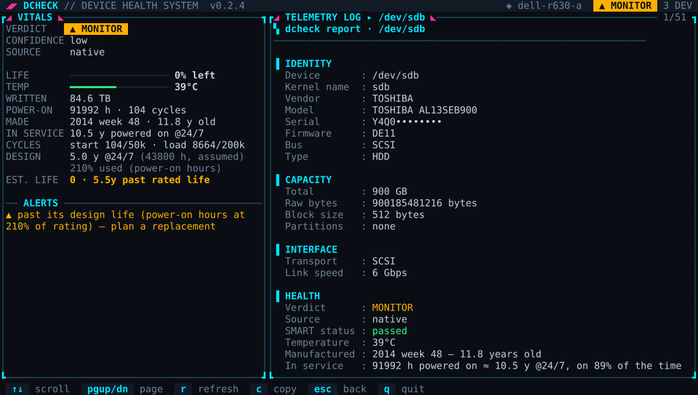
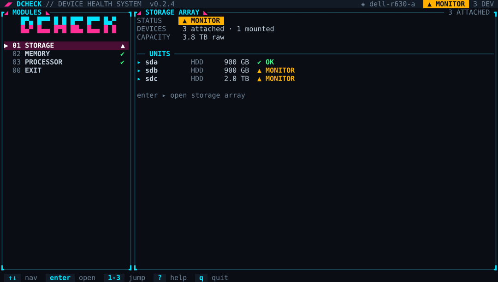
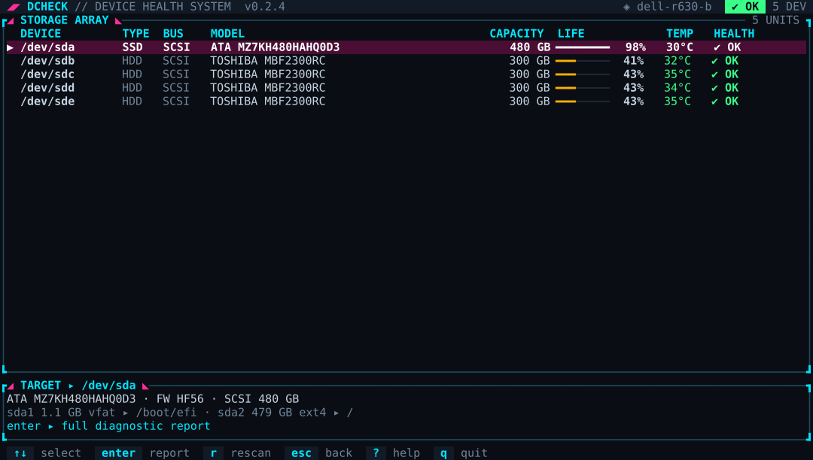
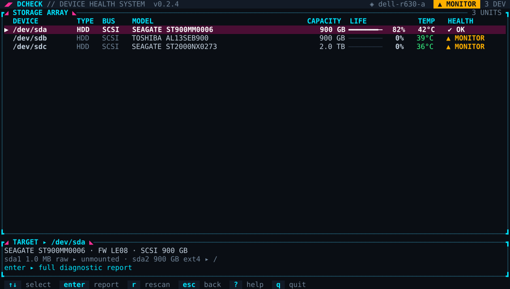
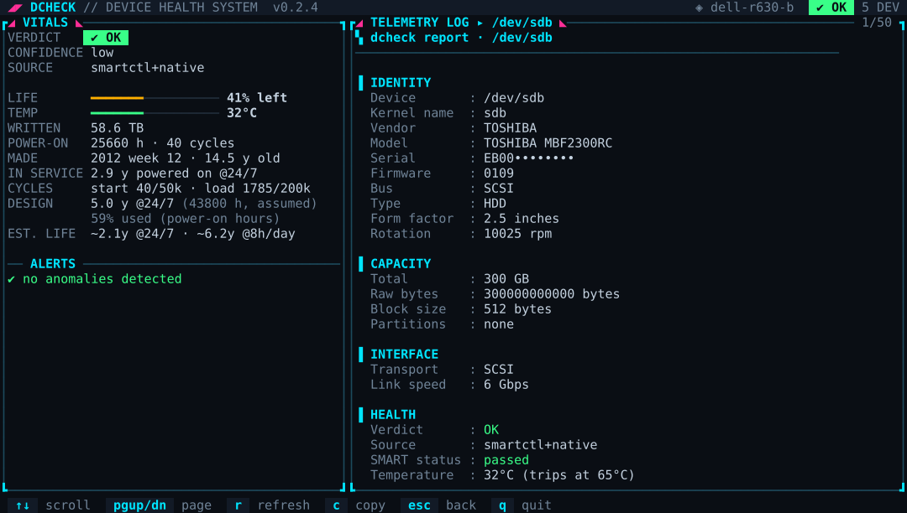
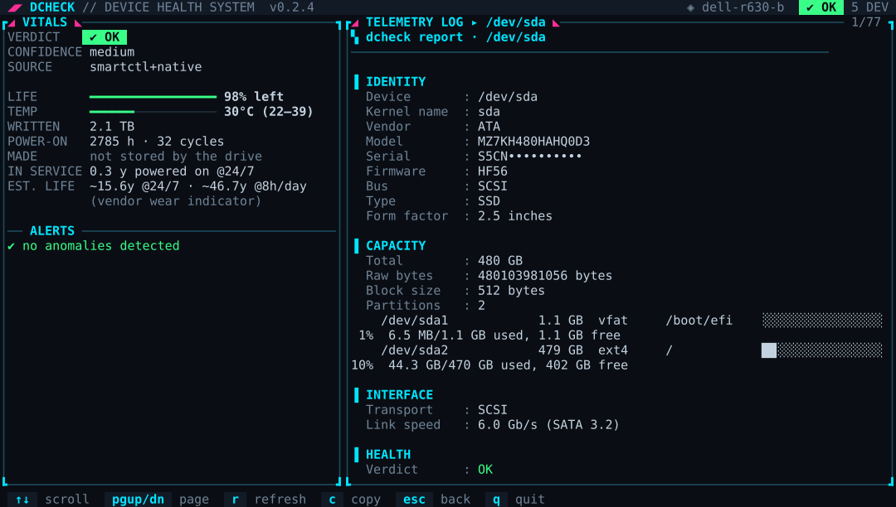
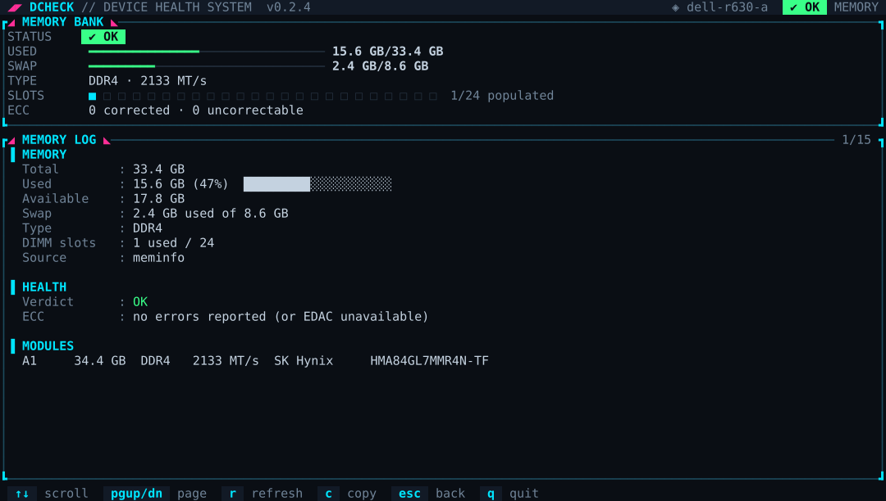
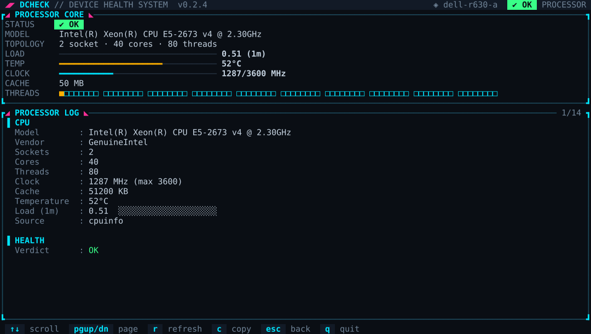
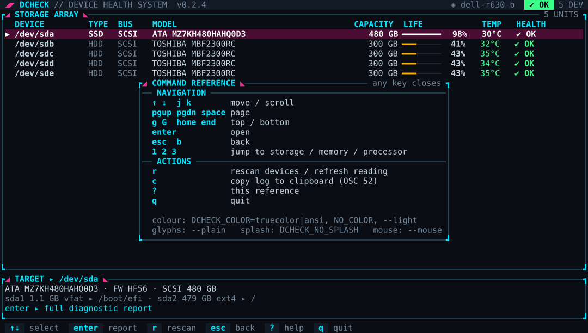
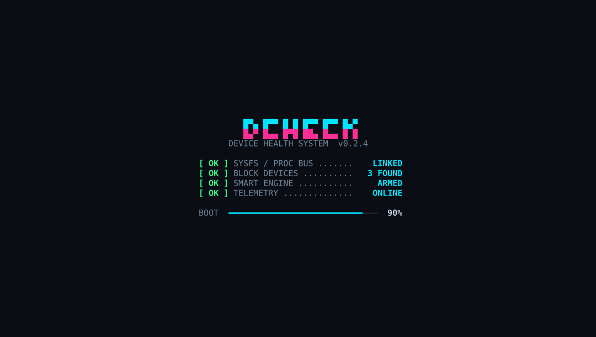

Storage health for server technicians — know which disk is dying before it takes the RAID with it.
SAS, SATA and NVMe SMART read natively (Dell PERC / LSI MegaRAID included), remaining-life estimates, a health gate for scripts, Prometheus metrics and webhook alerts — plus RAM and CPU. One static Linux binary, no dependencies.
curl -fsSL https://wayang.dalang.io/dcheck/install.sh | sh
Linux & macOS · x86_64 / arm64 · latest release v0.2.5

Real output from a Dell PowerEdge R630: a Toshiba SAS drive with 92,000 power-on hours is flagged before it fails.
Everything a technician needs to decide: keep, watch, back up, or replace.
Reads ATA, SCSI/SAS and NVMe health straight from the kernel (HDIO, SG_IO, NVMe admin). Works in a minimal rescue system. If smartmontools is installed, both sources are merged.
Tested on Dell PERC H330/H730 (LSI MegaRAID 3008/3108): SAS health status, grown defects, error counters, SAS link rate and phy errors, SATA SSDs behind the controller.
SSD: vendor / ACS wear indicator or host writes vs rated TBW. HDD: power-on hours vs design life and the drive's rated start-stop / load-unload cycles. Shown for 24/7 and 8h/day, with a confidence level.
dcheck check exits 0/1/2/3 by the worst verdict — drop it into cron, systemd or CI. dcheck watch alerts on any change for the worse and can POST a webhook.
dcheck prometheus prints health severity, temperature, power-on hours, bytes written and more for your scraper. Every report is also available as stable JSON.
Memory usage, ECC errors (EDAC), DIMM slot map with vendor / type / speed from SMBIOS, DDR5 temperature. CPU model, topology, clock, cache, load, and per-socket temperatures judged against each CPU's own limits.
Neon truecolor in modern terminals, the ANSI palette on a Linux console or iDRAC/iLO virtual console, --plain for ASCII-only fonts, NO_COLOR respected, text stays selectable.
Never writes to a disk. Self-tests and the read benchmark only run when you ask. Ceph RBD, DRBD, device-mapper and loop devices are skipped automatically.
~1 MB binary for Linux (static musl) and macOS, x86_64 and arm64. dcheck update downloads the latest release, verifies its SHA-256 checksum and replaces itself atomically.
Captured on two Dell PowerEdge R630 servers (serial numbers masked). Click to enlarge; arrow keys to navigate.

Command deck — live summary of every module

Storage array — SSD + 4 SAS HDDs behind a PERC H730

Alerts at a glance — two drives past their design life
HDD report — 5.5 years past its design life

SAS HDD — manufacture date, rated cycles, design life

SATA SSD — wear, lifetime temperatures, device statistics

Memory — usage, DIMM slot map, ECC

Processor — load, temperature, 80-thread grid

Command reference overlay

Boot splash (0.5 s, any key skips)
Any Linux distribution on x86_64 or aarch64 (static binary, nothing else required), and macOS on Apple Silicon or Intel.
Detects the architecture, downloads the release, verifies SHA-256 and installs to /usr/local/bin (with sudo if needed, or ~/.local/bin). Options: DCHECK_INSTALL_DIR=/opt/bin, DCHECK_VERSION=0.2.5 (pin a version).
Offline or air-gapped server? Download the tarball for your architecture from the release directory below, copy it over, and run tar xzf + install.
| Platform | File |
|---|---|
| Linux x86_64 (Dell / HPE / Supermicro, most PCs) | dcheck-0.2.5-x86_64-unknown-linux-musl.tar.gz |
| Linux aarch64 (Ampere, Raspberry Pi 4/5, Orange Pi) | dcheck-0.2.5-aarch64-unknown-linux-musl.tar.gz |
| macOS Apple Silicon (M1–M4) | dcheck-0.2.5-aarch64-apple-darwin.tar.gz |
| macOS Intel | dcheck-0.2.5-x86_64-apple-darwin.tar.gz |
| Checksums | SHA256SUMS |
Releases are immutable: a published version never changes. Older versions stay available under /dcheck/v<version>/.
From a one-off check during a site visit to continuous monitoring of a whole fleet.
sudo dcheck check — one line per disk with its verdict and the reason.sudo dcheck → Storage. The array table shows health, remaining life and temperature for every drive, even behind a PERC / MegaRAID controller.c to copy the report into a ticket.dcheck check, a Prometheus scrape, or dcheck watch --webhook.| Verdict | Means | Do | exit |
|---|---|---|---|
| ✔ OK | No failure signs. | Nothing. Re-check periodically. | 0 |
| ? UNKNOWN | No SMART data (not root, USB bridge, SD card). | Run with sudo; the report says why. | 1 |
| ▲ MONITOR | Early warning: reallocated sectors, CRC errors, high temperature, past design life. | Watch the trend, check cables and cooling, order a spare. | 2 |
| ✖ BACK UP NOW | Pending / uncorrectable sectors, media errors, attribute at threshold, wear ≥ 90%. | Back up immediately, schedule the swap. | 3 |
| ✖ REPLACE | The drive itself reports SMART failure. | Replace now. | 3 |
systemctl enable --now dcheck.timer. A non-zero exit marks the unit failed, so any existing alerting on failed units (or OnFailure=) picks it up.
Posts only when something gets worse (a new issue or a worse verdict):
| ↑ ↓ / j k | Move / scroll | Enter | Open |
| Esc / b | Back | 1 2 3 | Storage / memory / processor |
| PgUp PgDn g G | Page / top / bottom | r | Rescan / refresh |
| c | Copy the log (OSC 52) | ? / q | Help / quit |
Flags: --plain (ASCII), --light, --transparent, --mouse. Env: DCHECK_COLOR=truecolor|ansi, NO_COLOR, DCHECK_NO_SPLASH. Config: ~/.config/dcheck/config.json (temp_warn_c, hdd_design_years, …).